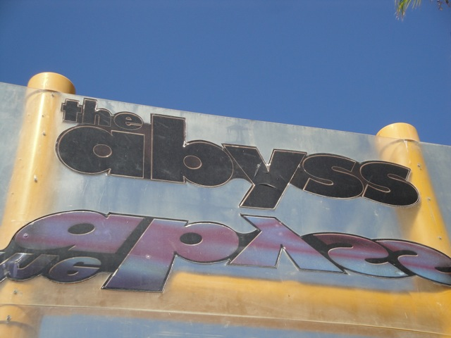
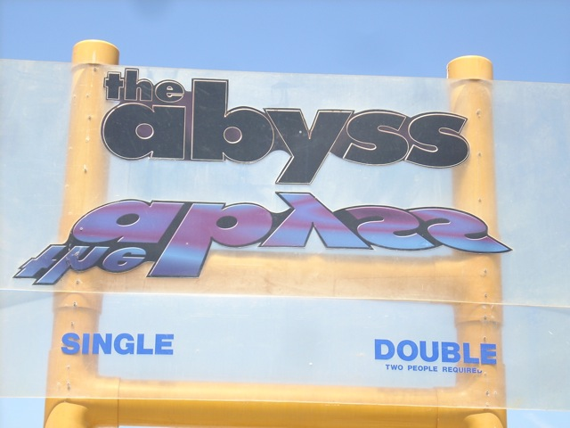

| |

Abyss Review

For this review, we're going to travel back in time to 2009, which while wasn't my last visit to Wild Rivers, was my last ride on the Abyss. Now most of the water slides at Wild Rivers are fun, unique, and exciting. Well, one of those exceptions would have to be the Abyss. When you climb up all those stairs carrying that tube, you think to yourself "Wow. We are high up. This MUST be a good ride." However, if you actually bother to look at the layout of the ride and ignore its size, you can tell that this ride is going to suck. Then you finally get to the top. If you get lucky, the ride operator may let you slide down backwards. Though this won't make the ride good by any means, it is still an improvement. The ride starts to pick up some speed, but right as you start to go fast, you get heavily trimmed to death. Then it's nothing but trim after trim after fucking trim. Then you popped out into daylight. Dissapointed and let down. One of the few things I don't miss.
4/10
Location: Wild Rivers
Opened: I honestly don't know
Died: September 25, 2011
Built by: I honestly don't know.
Last Ridden: July 22, 2009




Home
|